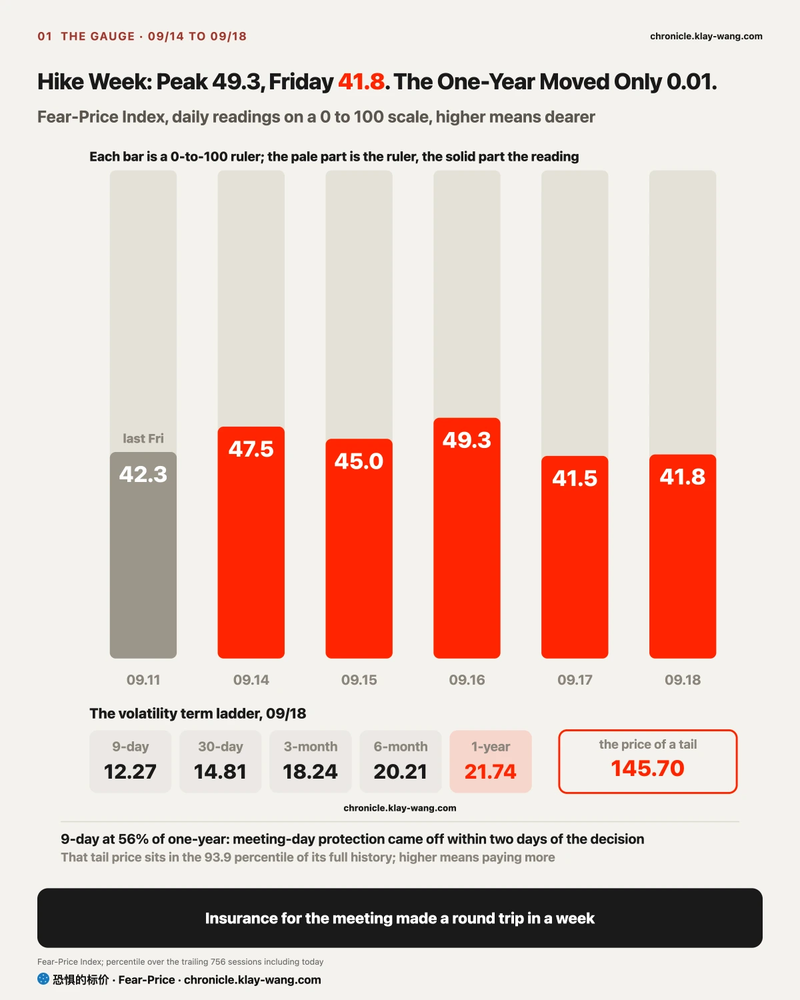
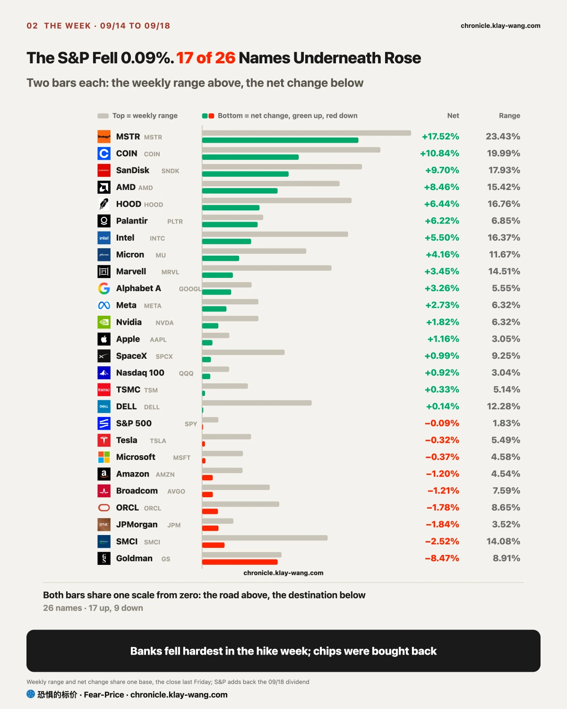
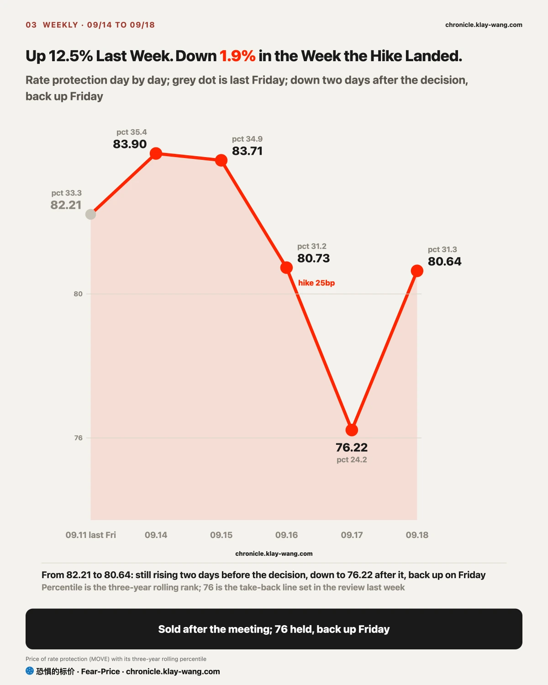
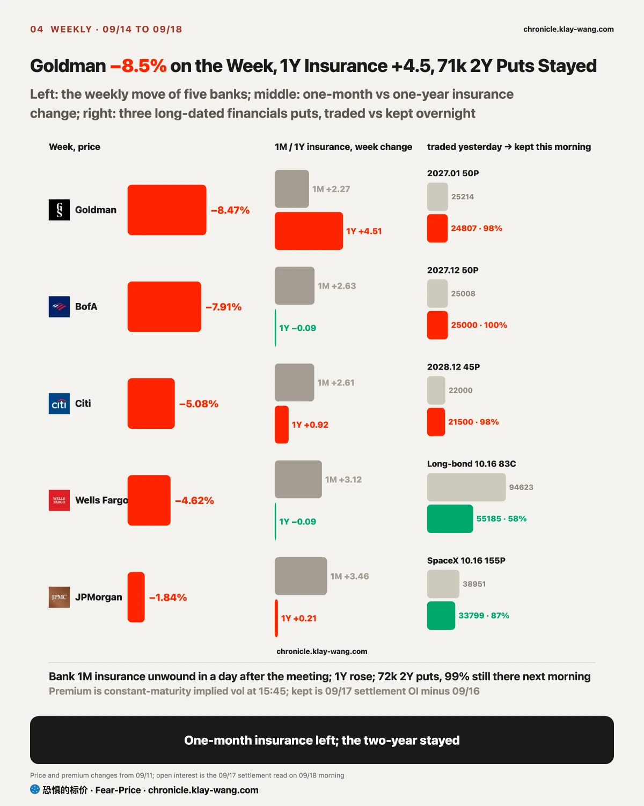
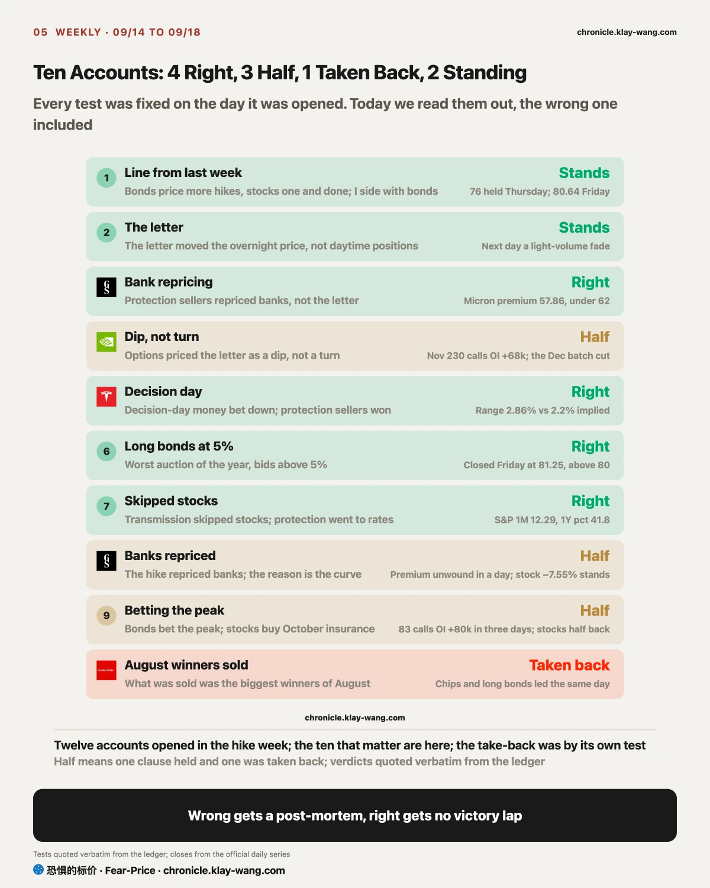

Fear-Price Index · Sep 18, 2026 · reading 41.8/100: one-year volatility VIX1Y at 21.74, in the 41.8th percentile of the past three years, where high means expensive. Daily ledger and definitions → chronicle.klay-wang.com · Please credit: Fear-Price Index
Last Friday 42.3, decision day 49.3, this Friday 41.8. One-year insurance bought for the meeting went back to its starting point once the meeting was over, and nobody bought an extra year of protection all week. What it means for you: the market did not treat this hike as the start of a cycle, only as one meeting. Our K index sits at 1.97 and needs the VIX above 29 to break 1; the history is at chronicle.klay-wang.com/kindex and the index itself at chronicle.klay-wang.com/fear-price.

The S&P lost 0.09% on the week, nothing, even after adding back the Friday dividend. Underneath, strongest to weakest spanned 26 points, and the moves split into two kinds.
The first kind was bought in the day. SanDisk gained 9.7% on the week with a negative gap, all of it made from open to close; Micron and AMD had the same shape; the three crypto stocks gained 6% to 17%, almost all of it on Friday, bought in the session. What this group has in common: the hole the AI-slowdown letter dug on Monday was filled by daytime money within four days, and the buyers carried protection, with insurance on SanDisk and Intel getting dearer. A rise bought in the day has the better odds of holding.
The second kind rose overnight. Alphabet gained 3.3% on the week, all of it from gaps, with the session at −2.5%; Meta and Tesla had the same shape, gapping up and getting sold every day. Nobody buys this kind in the day, and without the next gap it is gone. If you hold these three, set the size of the rise aside and watch whether anyone buys after the open.
Why split the gap from the session. A gap up is overnight news and futures pushing the price; the opening print carries no volume, it is a quote nobody has actually paid. What happens after the open is where money changes hands: a stock that climbs all day is buyers lifting offers, and the bigger the volume the more of them there are; a stock that gaps up and slides is sellers parked at the open with nobody to take them, pushed down and still low at the close, which means more people cashing out than coming in. The last hour is the most honest, the final vote of the day: a close in the top tenth of the range means someone is willing to carry the position overnight; a close in the bottom tenth means someone delivered before the bell. Volume is the denominator for all of it: a fade on light volume is nobody caring, a fade on heavy volume is someone selling. Witching day adds one more layer: the options the market makers sold expire that day, and they steer the price to where the most contracts expire worthless, which is how SpaceX ended exactly between 150 and 155.
Across assets: long bonds rose in the week of the worst auction; the dollar rose and the yen fell 2% even as the Bank of Japan hiked; gold, silver and copper rose, oil did not. The 09.10 issue said what was being repriced was energy against everything else; this week it flipped, physical assets rose in the week the hike landed and oil did not.

Last week I wrote: bonds price more hikes, stocks price one and done, I side with bonds, one side changes its mind next week. Both sides moved and moved back.
Stocks changed their mind first, then changed it back. The price of stock protection crossed 14 on decision day, fell back to 12.3 the next, and did not climb back once witching passed on Friday; that October protection was bought for the expiry, not for the hike. The money betting down says it more plainly: 54% of the money on decision day bet on a fall, 15% of the money for next week did by Friday, and the protection sellers won. Equity options already treat the hike as history.
Bonds do not. The price of rate protection came within 0.22 of the 76 line on Thursday without breaking it and climbed back to 80.64 on Friday; the two-year yield rose 12 basis points on the week, and swaps price three or four more hikes by mid next year. Siding with bonds stands.
What it means for you: stocks count one hike, bonds count three or four. If your stocks trade with equities, chips, memory, crypto, advertising, their prices have already forgotten the hike; if they trade with bonds, banks, utilities, long bonds, their prices are still counting a cycle. The gap between the two lands on the banks.
One line from Peifengke this week worth keeping: a first hike rarely disturbs anything, the argument over whether it is done or a cycle only starts after the second or third; and how long a cycle runs depends on fiscal policy and AI capex, not on the Fed alone, so the midterms carry about as much weight as the FOMC. Against our numbers, the market is counting one, and only the banks count a cycle. The next testable date is October 28, the second hike; if one-year stock insurance has not climbed above 23 after it, the narrative he describes has not changed yet.

The market priced this hike as an event, and only in the banks as a cycle. To see why, start with how a bank earns.
Step one, how a bank earns. It pays short-end interest on deposits and collects long-end interest on loans; borrowing short and lending long, the gap between the two is its profit. On decision day the short end reached its highest since 2024 and the gap to the ten-year was the flattest since late June. When the short end rises and the long end does not, that gap narrows.
Step two, who is affected when rates rise. One hike affects one quarter of that gap; a cycle affects two years of it, so how far the banks get repriced depends on how many hikes the market counts. Step three is the bond market answer: the two-year yield at 4.74% on Friday, rate protection back to 80.64, swaps pricing three or four more. Counted that way, what is affected is two years of profit.
Step four, the options market as the check. One-month insurance on the five banks rose Monday to Wednesday and unwound in a day on Thursday, bought for the meeting; one-year insurance on Goldman rose 4.5 points on the week, the most of any name. On Thursday someone bought 72k puts on the financials ETF expiring 2027 to 2028, and 99% were still there Friday morning. Insurance for one meeting is sold once the meeting is over; insurance for a whole cycle is the kind that stays.
With the four steps done, the week falls into place. All five banks fell, Goldman most, the larger the share of trading revenue the larger the fall; Goldman closed Friday at 942, below its 200-day line, at 13.7 times earnings, cheaper than on nine tenths of days in three years. Cheap, broken and with insurance rising, all three at once: the market is pricing a cycle that affects two years of bank profit, not one meeting. At this position, if it were me, either wait for the one-year insurance to stop rising, or wait for the pricing of an October hike to fall from about sixty percent; until one of those happens, cheap is only cheap.
If Goldman one-year insurance falls back below where it stood last Friday before 09.30, or the financials ETF recovers 57, the banks were a one-off repricing on decision day and this call is taken back.

Our view comes in three parts. Between the first and second hike, from now to October 28, chop is more likely than trend: of the 37 hikes in our history the 7 most like this one were mostly higher three months later but all bounced around inside a month; Reuters counts six first hikes since 1994 with the S&P down 3.6% on average after 60 days and up 8.3% after 12 months. In this stretch the market counts one hike and daytime money picks what pays today, which is what this week looked like.
The repricing comes after the second or third, and it affects names in order: first the end that borrows most and pays back slowest, the cloud data centers, real estate, utilities, banks living on the spread; later the end with cash flow close at hand, chips that get paid early and high-margin businesses with pricing power. Jefferies counts energy as the best sector and technology second in the 12 months after a first hike, real estate the worst, and this week already sorted itself that way: utilities were the worst sector of the week, banks were re-run on two years of spread, chips and memory were taken by daytime money.
So protection belongs before the second hike, not after. Protection is at its cheapest now: S&P one-month insurance at 12.29 is in the cheapest tenth of three years, Nvidia one-month insurance is at its cheapest day in three years, one-year insurance at the 41.8th percentile is neither dear nor cheap. After the second hike those prices change; the day the one-year stands above 23, protection is dear. At this position, if it were me: no cut in size, but one-year protection over the half of the book that leans on chips and memory; the group bought in the day, memory and crypto, added to only if more than half of the calls survive the Monday settlement, and with protection attached; the group that rose overnight, Alphabet, Meta, Tesla, not chased at the open; the banks priced for the cycle, not bought on cheapness alone, but once one-year insurance stops rising.
Valuation separates two groups. Cheap and unchased: Nvidia at 27.8 times earnings, cheaper than on 99% of days in five years; Alphabet at 17.5 times, cheaper than on 95%; Goldman at 13.7 times, cheaper than on nine tenths of days in three years. Dear, chased, and carrying protection: SanDisk at 16.7 times book, dearer than on 84% of days in a year; MSTR at 1.7 times book, dearer than on 89%; Intel at 6.2 times book, dearer than on 99.8% of days in five years. What gets repriced after the second and third hike is the name in the dear group with the most distant cash flow, not the cheap group. The kill condition: if the dear group beats the cheap group in the month after October 28, this call is taken back.

Banks: this week was not one bad day, the market re-ran two years of the spread. Cheap is real, and cheap kept getting cheaper every day. The turn is not in the banks themselves; watch two numbers: the day one-year insurance stops rising, and the day the pricing of an October hike drops under half. Until then, holding the 200-day line will not bring buyers.
Chips and memory: the Monday hole was filled by daytime money, which holds better than overnight gains; the buyers are carrying one-year insurance, and anyone buying with them should too. SanDisk is 68% above its 200-day line, Micron just above 1000, AMD 58% above its 200-day line, all high. The Monday settlement shows how much of the money betting on them next week stays; more than half means someone is there to take it, less means witching-day money passing through.
Crypto stocks: almost the whole weekly gain came on Friday, with insurance three to four points dearer at the same time, so the chasers are buying protection. See how many of the MSTR calls survive the Monday settlement; the same test as memory.
Alphabet, Meta, Tesla: this week the gains came overnight and were sold every day. Set the size of the rise aside and watch whether anyone buys after the Monday open, and whether Alphabet holds 349.
Index funds: the S&P did not move in the week of the hike, all the action was underneath. No meeting next week, and the index keeps leaning on chips and memory; if they do not hold at the Monday settlement, the index loosens with them.
The line from last week, bonds price more hikes, stocks one and done, I side with bonds, one side changes its mind next week: both moved and moved back, siding with bonds stands, stocks changed their mind and took it back. Four right this week: protection sellers repriced the banks, not the letter; decision-day money bet down and the protection sellers won; on the worst auction day there were bids above 5% for long bonds; transmission skipped stocks. Three half: the letter priced as a dip, the hike repricing the banks, bonds betting the peak while stocks bought insurance, each half right. One taken back: what was sold last week was the biggest winners of August, and the money came back. One standing: the letter changed the overnight price, not the daytime positions.
这周评论区问得最多的一句：加息风险是不是已经落地了？答案分两半。股票说落地了：为议息买的保险议息完就退，押跌的钱从议息那天的 54% 掉到周五的 15%，卖保护的人赢了。债市说没有：两年期收益率一周又涨了 12 个基点，掉期押明年中之前还有三四次。你手里的票跟哪边走，答案就是哪边的。
标普一周没动，底下涨法分两种。芯片、存储、加密是白天买出来的，周一那封 AI 放缓的信砸出的坑四天填平，买的人自己在配保护；谷歌、Meta、特斯拉是涨在夜里的，天天高开被卖。前一种留得住的概率大，后一种看周一开盘有没有人买。
银行是唯一被按一整轮加息定价的。五家全跌，高盛 −8.5% 跌破 200 日线；一个月的保险议息完退光，一年期的却贵了 4.5 点全表第一，周四买的两年期看跌 7.2 万张周五留下 99%。为一次会议买的保险会开完就卖，为一整轮加息买的才留得住。
后面怎么走，我们的看法分三段：10 月 28 日第二次加息之前大概率是颠簸不是趋势，过去最像的 7 次加息一个月内都先颠一下、三个月后多半涨；第二三次之后才是重新定价，先压借钱多回本慢的那头（机房、地产、公用事业、靠利差的银行），后压现金流近的那头（收钱早的芯片）；所以保护该在第二次之前买，现在标普一个月保险在三年里最便宜的一成，英伟达的保险是三年最便宜的一天。这个位置如果是我：仓位不减，用一年期保护把靠芯片存储撑的那一半保起来，白天买出来的那组周一留住一半再加，夜里涨的那组不追高开，银行等一年期保险停涨。估值上便宜没人追的是英伟达 27.8 倍、谷歌 17.5 倍、高盛 13.7 倍；贵但有人追的是闪迪、MSTR、英特尔，第二三次加息后先被重新定价的会是贵的这组里现金流最远的。
下周没有议息，第一个要看的数在周一早上：三巫日押存储和加密下周涨的那批看涨还剩几成，留一半以上是新钱，留不下就是过路钱。
本周值得带走的三句话：三巫日的收盘是做市商钉出来的，SpaceX 卡在 150 和 155 正中间两边 12 万张作废，周五的价别当方向；保护在第二次加息之前买，一年期站上 23 就贵了；第二三次之后先被重新定价的是贵的那组里现金流最远的，不是便宜的那组。